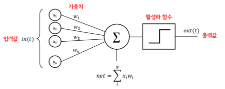
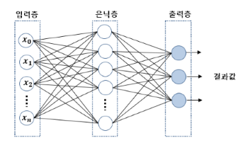
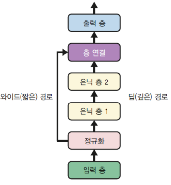
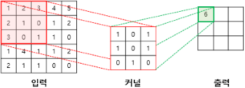
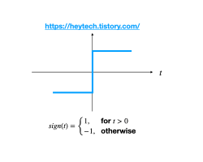
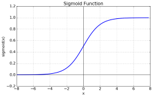
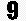

딥러닝의 중요 요소
데이터의 양과 질:- 잡음이 없는 데이터와 많은 데이터 양이 확보
적절한 모델선택:- 이미지 처리:
CNN자연어처리:RNN
- 이미지 처리:
하이퍼 파라미터 튜닝:- 학습률, 배치크기, 에폭 수 등의 하이퍼 파라미터를 적절히 설정
고성능 pc:- 좋은 CUDA 그래픽 성능을 가진 글카 필요
퍼셉트론

- 다수의 신호를 입력받아서 하나의 신호를 출력하는 알고리즘을 의미 쉽게말하면 여러개를 투입해서 하나의 결과값을 도출
0, 1 - 하나의 층 안에 놓인 하나 이상의
TLU로 구성 각각TLU는 모든 입력에 입력구성입력 층TLU 층구성출력 층- 사이킷런에서 Perceptron Api 지원
from sklearn.linear_model import Perceptron
per = Perceptron()다층 퍼셉트론 (MLP)

- 퍼셉트론을 여러개 쌓아올리면 일부 제약을 줄일 수 있음
- 비 선형적으로 분리되는 데이터에 대해서는 제대로된 학습이 불가하다
XOR(입력값이 같으면 0 다르면 1)연산 학습 불가
- 기존 퍼셉트론에
은닉층(hidden layer)이 추가된 것 - 입력, 출력층 사이 여러 개 은닉층이 존재하는 것을 <심층 신경망>
- 이것을 학습하기 위해 고안된 알고리즘이 <딥러닝>
- sklearn 에서
MLPRegressor()api 사용하여 해볼 수 있음
순전파, 역전파 알고리즘
순전파:- 입력층 → 은닉층 → 출력층 순으로 노드에 값이 전달되는 형식
역전파:- 후진모드 자동미분과 경사 하강법을 결함
- 은닉층에선 출력값에 대한 기준이 존재하지 않음 그래서 오차율 측정이 어려움
- 출력층에서 발생하는 오차값을 역으로 입력층에 보내면서
은닉층에 노드사이즈에 가중치를 제조정 - 이 과정을 반복하며 오차가 더 줄어들때까지 함 이것을 <에보크>
회귀
하이퍼 파리미터:은닉층 수: 1~5은닉층 뉴런 수: 10 ~ 100출력 뉴런 수: 예측 차원 마다은닉층 활성화 함수: RELU출력층 활성화 함수: None손실함수: MSE(평균 제곱 오차), 이상치 발생시후버
와이드 & 딥 신경망
- 비 순차적 신경망
- 정규화 이후 층 연결 한번하고
- 정규화로 넘어와서 은닉층을 구성함
즉 정규화 과정이 두 번 반복되는 구조

케라스
딥러닝 프레임워크, 그러나 텐서플로우에도 자체 내장이 되어있음
구현방식
Sequential API
tf.random.set_seed(42)
1 model = tf.keras.Sequential()
2 model.add(tf.keras.layers.Input(shape=(28, 28)))
3 model.add(tf.keras.layers.Flatten())
4 model.add(tf.keras.layers.Dense(300, activation="relu"))
5 model.add(tf.keras.layers.Dense(100, activation="relu"))
6 model.add(tf.keras.layers.Dense(10, activation="softmax"))- 모델 만들기
- 첫번째 층(입력층)을 만들어 모델에 추가
Flatten층 추가- 주요 특징을 1차원 자료로
- 뉴런 수 300 가진 Dense 은닉층 추가
- 뉴런 수 100개 가진 Dense 은닉층 추가
- 클래스 마다 하나씩 뉴런 수 10개 가진 Dense 은닉층 추가
Functional API
normalization_layer = tf.keras.layers.Normalization()
hidden_layer1 = tf.keras.layers.Dense(30, activation="relu")
hidden_layer2 = tf.keras.layers.Dense(30, activation="relu")
input_ = tf.keras.layers.Input(shape=X_train.shape[1:])
normalized = normalization_layer(input_)
hidden1 = hidden_layer1(normalized)
hidden2 = hidden_layer2(hidden1)
model = tf.keras.Model(inputs=[input_], outputs=[output])Subclassing API
- 위
Functional,Sequential장 단점장점:- 모델 저장 복사 쉬움
- 구조를 출력, 분석 쉬움
단점정적 구조: 반복문과 다양한크기 등의 동적인 구조가 아님
명령형 프로그래밍 스타일 이 필요하면 서브 클래싱이 답
class WideAndDeepModel(tf.keras.Model): # tf.keras.Model 을 상속 받아서 생성
def __init__(self, units=30, activation="relu", **kwargs):
super().__init__(**kwargs)
self.norm_layer_wide = tf.keras.layers.Normalization()
self.norm_layer_deep = tf.keras.layers.Normalization()
self.hidden1 = tf.keras.layers.Dense(units, activation=activation)
self.hidden2 = tf.keras.layers.Dense(units, activation=activation)
self.main_output = tf.keras.layers.Dense(1)
self.aux_output = tf.keras.layers.Dense(1)콜백
ModelCheckpoint: 일정 간격으로 모델의 체크포인트 저장EarlyStopping: 일정 에포크 동안 점수향상 없으면 중단시키기
하이퍼 파라미터 튜닝
GridSearchCV,RandomizedSearchCV를 사용하여 하이퍼 파라미터 튜닝- 은닉층수, 각 층의 뉴런수, 학습률 등
random_search_tuner = kt.RandomSearch(
build_model, objective="val_accuracy", max_trials=5, overwrite=True,
directory="my_fashion_mnist", project_name="my_rnd_search", seed=42)하이퍼 파라미터
모델에 설정하는 변수 학습률, 에보크수(훈련 반복횟수), 가중치 초기화 등을 결정
종류
학습률: 일반적으로 최적의 학습률은 최대 학습률의 절반정도옵티마이저: 더 좋은 옵티마이저 선택배치크기: VRAM에 맞는 가장 큰 배치 크기 사용이 권장활성화 함수:ReLU가 대부분에 경우에 좋음반복횟수: 조기종료 사용하는게 좋음
은닉층의 뉴런 개수
- 필요한 입, 출력 작업에 따라 결정
- 구성방식은 각 층의 뉴런을 점점 줄여 깔대기 식
- 과대 적합이 생기기 전까지 점진적으로 늘려가는 식
합성곱 신경망 (CNN)
이미지 처리에 탁월한 신경망 알고리즘 (Convolutional Neural Network)
- 그림은 픽셀이 달라저도 의미는 같은 경우가 많은데 다층퍼셉트론 만 가지고는 그게 안됨
합성곱 층
Conv2D
- 많은 ram을 요구, 왜냐하면 각 층에서 계산된 모든 연산값을 가지고 있어야 되서
- 보통 그림 데이터는 3차원인데 이를 2차원 형태로 배치하는 과정에서 문제
- 한 픽셀, 픽셀에 색 정보는 담을 수 있지만 그 위치값은 담지를 못함
구조

- 첫 층에 뉴런은 모든 픽셀에 연결하는 게 아닌
뉴런 수용장안에있는 픽셀만 연결 - 그 다음 층에는 그렇게 연결한 것들을 연결
- 저수준 → 더큰 고수준 특성으로 조합 되는 방식
- 이런식으로
커널(필터)라는걸 만들어서 각 행열을 곱하고 결과를 냄 - 이렇게 반복해서 출력값을 다 채우면 그게 <특성맵>
이런 식으로 여러 특성맵을 쌓아 여러 특성을 감지하게 된다
스트라이드
- 한 수용장과 다음 수용장 사이 수직, 수평 스텝 크기
- 큰 입력층을 훨씬 작은 층에 연결하면 계산 복잡도 가 크게 낮아짐
제로 패딩
- 입력크기보다 특성맵이 작아지는걸 방지하기 위해 테두리 값을 0으로 채우는 것
풀링 층
- 계산량, 메모리량, 파라미터 수를 줄이기 위해 입력 이미지에 부표본을 만드는 것
- 가중치가 없어 최대, 평균 합산함수 사용
최대 풀링,최소 풀링- 최대 풀링에 경우 작은 변화에 대한 불변성도 챙겨줌
최대 풀링은 해당 영역에서 최대 값을 검출하여 출력맵을 구성 평균은 평균 으로
종합 CNN 구조
- 입력 → 합성곱 → 풀링 → 합성곱 → 풀링 → 완전연결
대표적인 CNN 구조
LeNet-5: 손글씨 숫자인식에 널리사용AlexNet: 2012 이미지넷 우승작, 처음으로 합성곱 위 합성곱 구조를 채택GoogLeNet: AlexNet 보다 10배 적은 파라미터를 가지면서 훨씬 효과적ResNet: 스킵연결, 숏컷 연결 구조, 3.6 이하에 탑5 오류율
정확도, 모델크기, CPU GPU 속도를 고려하여 선택하는게 좋음
그 외
객체 탐지:- 이미지 중앙에 놓인 하나의 물체 분류 위치 찾기
- CNN으로 이미지 훑으면서 예측을 만듬
객체 추적:DeepSORT56:- 이전에 감지된 객체에 가장 가능성이 높은 위치로 지정
- 딥러닝으로 새로운 탐지결과와 기존객체와의 유사성 비교
- 헝가리 알고리즘 사용해 새로운 탐지 대상을 기존 추적 객체에
시멘틱분활:- 사진에 나온 요소들이 해당하는 위치를 분활 하는것
- 사전 훈련된 CNN을 FCN 으로 변환
- CNN이 입력이미지 에 적용하는 전체 스트라이드는 32
- 업샘플링 층을 하나 더 추가
- 사진에 나온 요소들이 해당하는 위치를 분활 하는것
텐서플로우 기본
텐서: 데이터의 배열edge를 따라 흐르는 값rank(차원),shape(행, 열),type매개변수를 가짐
operation: 추상적 연산, numpy 같은거constant,variable,placehorder등등
실행
a = tf.Variable(10)
b = tf.Variable(20)
init = tf.global_variables_initializer()
with tf.Session() as sess:
sess.run(init)
sess.run(tf.add(a, b))- 코드가 아무리 상단에 위치한다고 한들 run() 함수 흐름에 따라 가게 된다
- 즉
tf.add(a, b)하기 전까지는 a, b 값은 undefined
변수선언
a = tf.Variable(값)
b = tf.constant(값) #상수
c = tf.cast(b, tf.float32)- constant는 클래스가 아니라
- Variable은 사용하기전 반드시 초기화 과정을 거쳐야 함
global_variables_initializer() - 텐서플로우 변수는 형변환이 자동으로 이뤄지지 않는데 자료형으로 인한 오류 방지 목적임
- 형변환은 성능 문제를 일으키므로 주의해서 사용
tf.Tensor: 변경 불가능한 객체
placeholder
a = tf.placeholder(2, tf.int32)- 변수 값을 이후에 초기 하는 용도 즉 미리 메모리 값을 할당하는
tf.Session()과정에서 실행 흐름에 초기화 해 줄 수 있음
sess.run(실행변수, {a: 10})연산함수
add(): 덧셈subtract(): 뺄셈multiply(): 곱셈divide(): 나눗셈
추가 지원 자료구조
- 희소 텐서
- 텐서 배열
- 래그드 텐서
- 문자열 텐서
- 집합
- 큐
기타
- tensor → numpy
a = tf.constant(1)
a.numpy()- numpy → tensor
a = np.array([10, 20])
tf.square(a)- 연산문제
a = tf.constant([1, 2, 3], tf.float32)
b = tf.constant([5, 5, 5], tf.float32)
c= a+b
c= tf.add(a,b)- 모든 연산은 연산 함수를 쓰던 기본 연산자를 쓰건 동일하다
용어정리
후버 손실
L1 손실: 그래프가 V 형태라 미분 불가 지점이 존재
L2 손실: 그래프가 U 형태라 모든곳 미분 가능 그러나 이상치에 취약
L1, L2 손실을 보완한 모든곳 미분가능, 이상치에 강한 손실함수
활성화 함수
퍼셉트론의 출력값을 결정하는 비 선형 함수
사인(sign) 함수

- 입력값의 총 합이 0보다 크면
1, 작으면-1을 출력하는 함수 - 계단 함수 라고 부르기도함
시그모이드(Sigmoid) 함수

- 모든 입력값에 대해 출력값이 실수 값으로 정의
- 값이 작아질수록
0, 커질수록1에 수렴 - 극단적으로 0 과 1만 반환하는 사인 함수에 단점을 보완하여 이상치 문제를 해결
랠루(Relu) 함수

- 입력값이 양수면 입력값을 출력
- 음수면 걍
0으로 - 계산효율성이 시그모이드 보다 높다
- 시그모이드에서 발생 할 수 있는
포화문제방지- 포화문제란 출력이 1또는 0에 너무 가까워져서 가중치와 편향을 업데이트 하기 어려워 지는 것
소프트맥스(Softmax) 함수
- 시그모이드와 비슷
0~1값을 정규화 하여 출력, 총합이1
가중치, 편향
가중치: 어떤 데이터 집합이 있을 때 각각의 데이터에 중요도를 나타내는 수치편향: 가중치를 다 더한 뒤 해당 값에 더해주는상수, 예를 들자면 인싸라면 파티에 갈 편향은 10이라 치고 아싸라면 파티에 갈 편향을 0이라 치자 둘 다 파티에 갈 모든 경우(가중치) 에 합이 10일때 인싸는 합이 20이므로 확율이 높고 아싸라면 합이 0이기 때문에 확율이 낮다
수식에서 가중치는
W, 편향은B로 많이 표현된다.
뉴런(신경망)
https://www.youtube.com/watch?v=aircAruvnKk
- 하나의 숫자를 담는다 (0.0 ~ 1.0)
- 예를들어 
이런 픽셀이 주어졌을 때 흰 픽셀을
0검은픽셀을1로 처리한다. 픽셀 모두를 하나에 행열로 만든다 - 픽셀에 검은 부분에 대한 가중치 (얼마나 검은지)를 부여
- 한층이 활성화 되는 정도를 열백터로 표현 모든 층을 모아 행렬백터로 표현, 각 열 한층과 다음층에 특정 뉴런에 대한 연결 표현
- 가중치에 따라 활성화 정도를 더한것이 행렬 백터곱을 하여 나오는 열백터의 각 원소에 대응
한마디로 정의하면 위 영상처럼 여러개의 데이터가 서로 어떤 규칙에 의해 얼키고 설킨
행렬
https://velog.io/@yuns_u/%EB%B2%A1%ED%84%B0%EC%99%80-%ED%96%89%EB%A0%AC
백터: 1차원 데이터행렬: 2차원 데이터스칼라: 단일 숫자